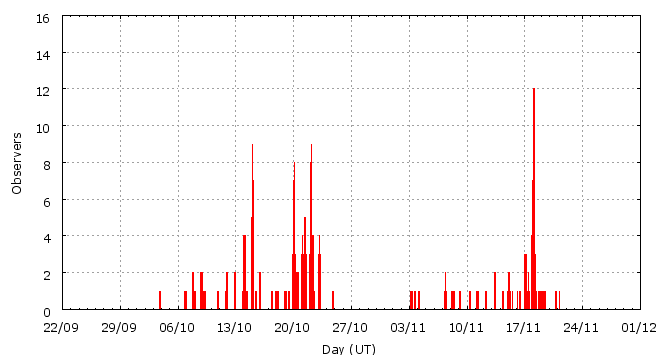

This page shows automated results of the Southern-Taurids 2007, based on visual data entered through the IMO electronic report form. Send your feedback regarding this page to Geert Barentsen or visit the project pages. Note that these automated results may not be suitable for scientific use!
Page generated: 2008 November 10 at 2:58 UT.
ZHRmax = 7 based on 247 Southern-Taurids in 571 data intervals, assuming fixed population index r = 2.3 and zenith correction 1/sin(hR).

| Time (UT) | Solarlon | nINT | nSTA | ZHR | |
|---|---|---|---|---|---|
| 2007-10-03 19:56 | 190.123 | 1 | 2 | 7 | +-4 |
| 2007-10-07 16:35 | 193.928 | 4 | 9 | 3 | +-1 |
| 2007-10-09 11:38 | 195.699 | 4 | 5 | 2 | +-1 |
| 2007-10-12 04:08 | 198.356 | 7 | 6 | 2 | +-1 |
| 2007-10-14 16:27 | 200.844 | 53 | 30 | 1 | +-0 |
| 2007-10-15 10:02 | 201.570 | 7 | 2 | 1 | +-1 |
| 2007-10-18 10:33 | 204.567 | 9 | 7 | 2 | +-1 |
| 2007-10-20 01:32 | 206.180 | 48 | 30 | 2 | +-0 |
| 2007-10-21 07:39 | 207.428 | 90 | 30 | 1 | +-0 |
| 2007-10-22 02:58 | 208.228 | 95 | 30 | 2 | +-0 |
| 2007-10-22 15:19 | 208.739 | 48 | 14 | 1 | +-0 |
| 2007-10-24 18:45 | 210.872 | 3 | 0 | 3 | +-3 |
| 2007-11-03 18:00 | 220.827 | 6 | 7 | 4 | +-1 |
| 2007-11-07 23:53 | 225.084 | 10 | 12 | 4 | +-1 |
| 2007-11-11 11:50 | 228.599 | 7 | 2 | 1 | +-1 |
| 2007-11-14 15:42 | 231.780 | 24 | 14 | 2 | +-1 |
| 2007-11-17 00:42 | 234.173 | 18 | 13 | 1 | +-0 |
| 2007-11-18 05:53 | 235.399 | 134 | 32 | 1 | +-0 |
| 2007-11-20 07:50 | 237.498 | 3 | 2 | 4 | +-2 |
For each estimation interval: time is the middle of the interval, nINT is the number of observing periods and nSTA is the number of Southern-Taurids involved. ZHR = (1 + sum nSTA) / sum(Teff/C) where Teff is the effective observing time and C is the total correction for limiting magnitude, clouds and zenith correction. The solar longitudes refer to equinox J2000.0.
Data has been received from 53 observers in 17 countries. Thank you for your efforts!

| Observer | Country | Teff | nSTA |
|---|---|---|---|
| Salvador Aguirre | Mexico | 22.90h | 12 |
| Salvador Aguirre | Mexico | 2.00h | 1 |
| Salvador Aguirre | Mexico | 2.00h | 0 |
| Salvador Aguirre | Mexico | 2.50h | 0 |
| Geert Barentsen | Belgium | 2.10h | 0 |
| Felix Bettonvil | Netherlands | 1.72h | 3 |
| Jean Marie Biets | Belgium | 2.33h | 0 |
| Jean-marie Biets | Belgium | 2.58h | 0 |
| Mark Davis | United States | 1.00h | 1 |
| Shishir Deshmukh | India | 3.75h | 2 |
| Sietse Dijkstra | Netherlands | 7.55h | 10 |
| Audrius Dubietis | Lithuania | 1.00h | 0 |
| Frank Enzlein | Germany | 5.56h | 3 |
| William Godley | United States | 3.04h | 0 |
| Mitja Govedic | Slovenia | 2.17h | 8 |
| Wayne T. Hally | United States | 26.15h | 25 |
| Vilem Heblik | Czech Republic | 7.50h | 5 |
| Carl Hergenrother | United States | 5.46h | 5 |
| Jiawei Ma Jiawei Ma | China | 0.37h | 9 |
| Carl Johannink | Netherlands | 11.63h | 12 |
| Roy Keeris | Netherlands | 0.90h | 0 |
| Andre Knofel | Germany | 8.97h | 7 |
| Nikhil Kolthankar | India | 1.50h | 1 |
| Peter Kozich | unknown | 2.27h | 3 |
| Dovile Krauleidiene | Lithuania | 1.00h | 0 |
| Jens Lacorne | France | 1.20h | 0 |
| Greet Lembregts | Belgium | 0.86h | 1 |
| Jan Lembregts | Belgium | 0.73h | 0 |
| Peter Van Leuteren | Netherlands | 14.25h | 13 |
| Alister Ling | Canada | 2.61h | 3 |
| Pierre Martin | Canada | 5.84h | 4 |
| Bruce Mccurdy | Canada | 6.00h | 9 |
| Frederic Merlin | France | 1.75h | 2 |
| Vandeputte Michel | Belgium | 4.25h | 0 |
| Koen Miskotte | Netherlands | 32.11h | 22 |
| Sabine Wachter | Germany | 4.29h | 4 |
| Sven Nather | Germany | 22.50h | 13 |
| Mohammad Nilforoushan | Iran | 1.53h | 2 |
| Shridhar Pophali | India | 3.07h | 1 |
| Jurgen Rendtel | Germany | 22.70h | 24 |
| Nathan Schulpen | Belgium | 1.08h | 1 |
| Nathan Schulpen | Belgium | 1.08h | 1 |
| Rene Scurbecq | Belgium | 6.29h | 4 |
| Ulrich Sperberg | Germany | 2.30h | 0 |
| Wesley Stone | United States | 1.79h | 1 |
| Blanca Troughton Luque | Spain | 2.33h | 0 |
| Shigeo Uchiyama | Japan | 7.55h | 6 |
| Michel Vandeputte | Belgium | 43.30h | 20 |
| Sicco Van Hoegee | Netherlands | 12.23h | 8 |
| Myriam Vingerhoets | Belgium | 2.69h | 2 |
| William Watson | United States | 5.94h | 4 |
| Thomas Weiland | Austria | 4.90h | 10 |
| Jurga Zieniute | Lithuania | 1.00h | 0 |
Create your own analysis!
Rate intervals: sta2007_rate.csv (CSV-format).
Magnitude distributions: sta2007_magn.csv (CSV-format).